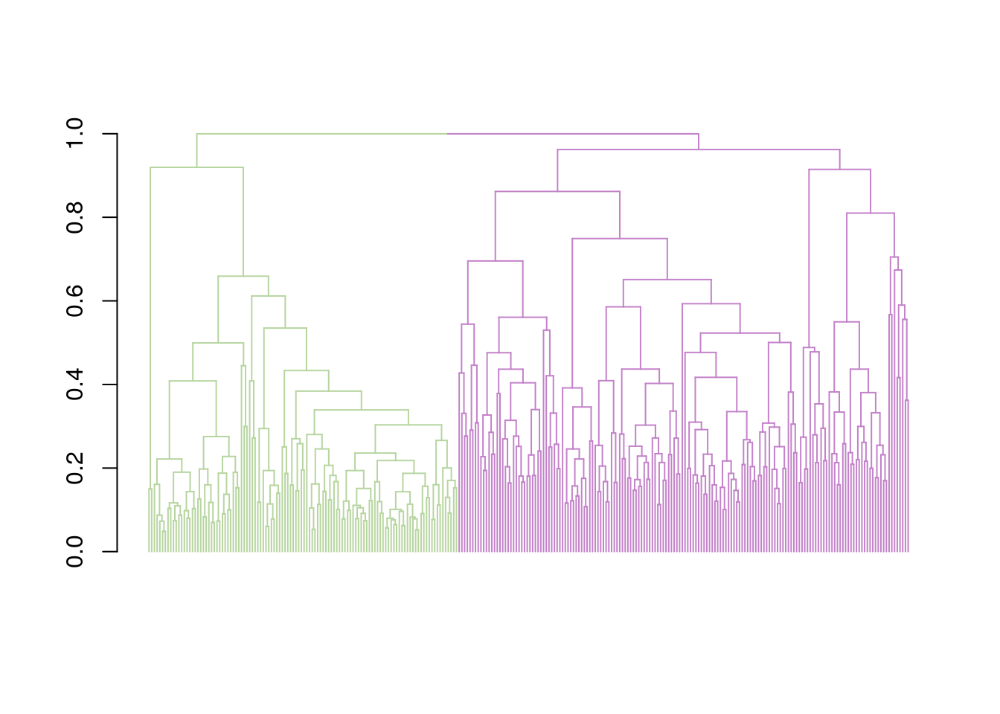
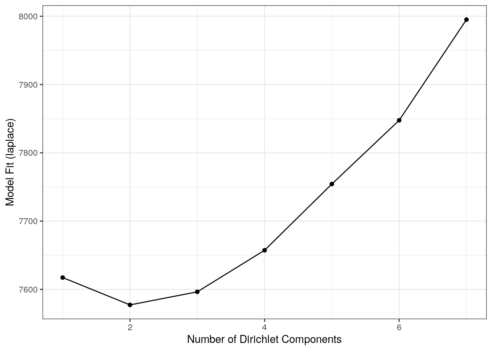
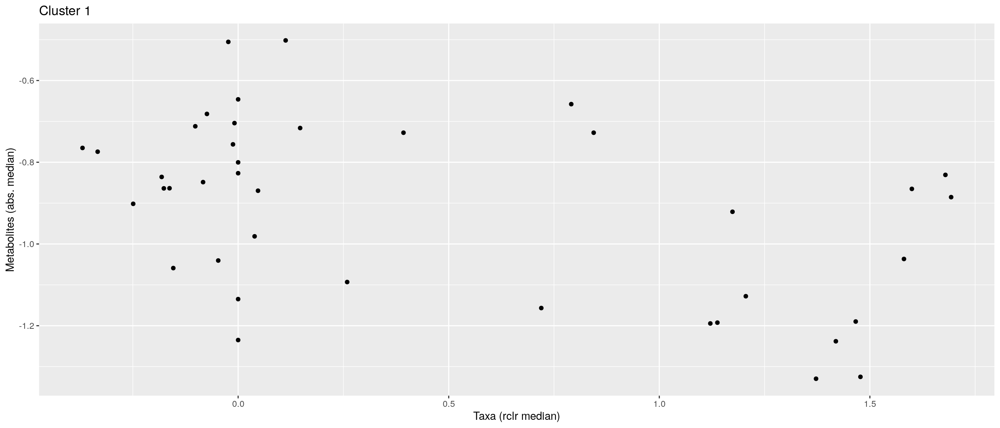
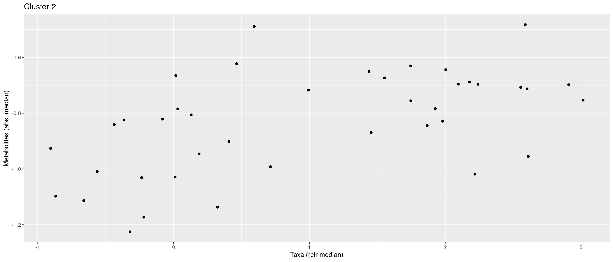
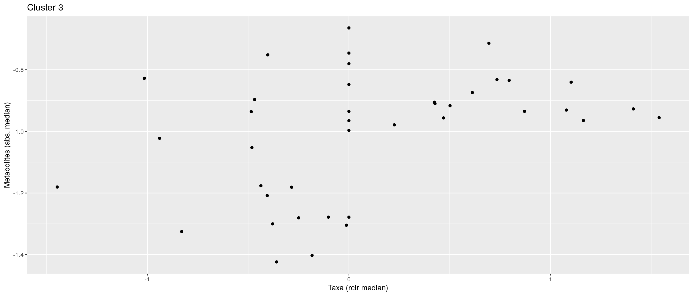
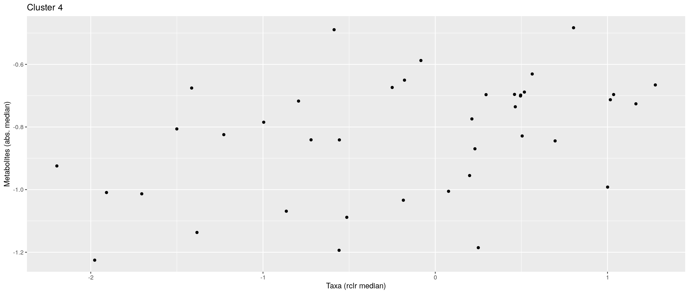
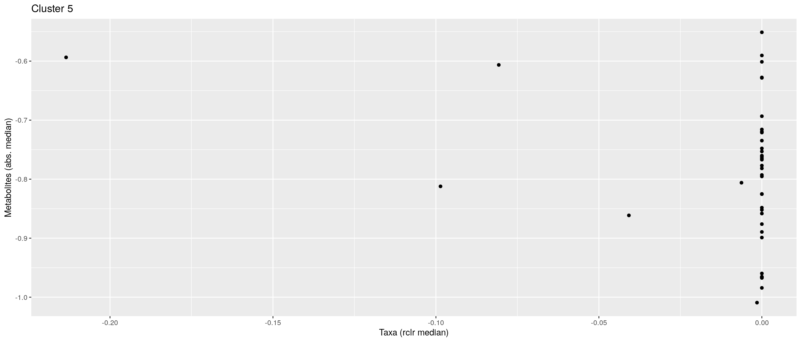
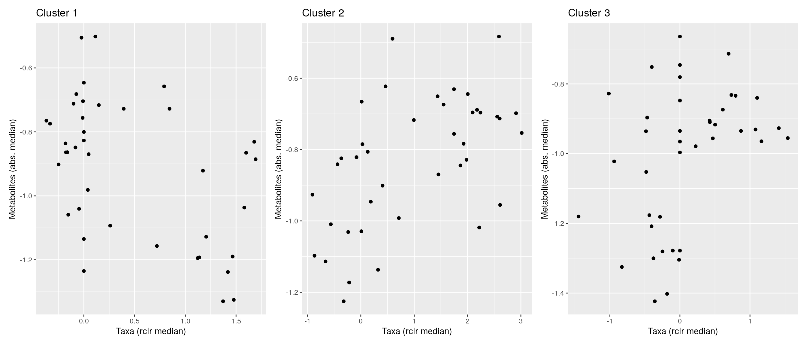
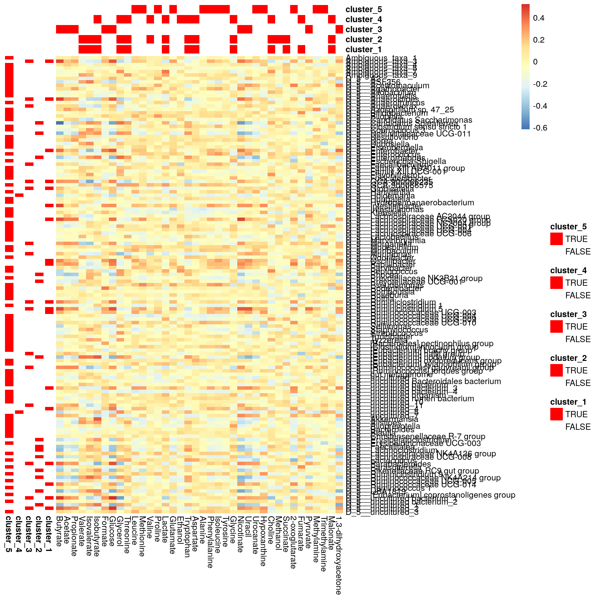

9 Community Typing (Clustering)
Clustering techniques are unsupervised machine learning that aims to find groups, called clusters, that share a pattern in the data. In the microbiome context, clustering techniques are included in microbiome community typing methods. For example, clustering allow samples to be distinguished from each other based on their microbiome community composition. There are multiple clustering algorithms available.
The data can be clustered either based on features or samples. Hence, depending on the analysis goal the data might require transformation. The examples below are focused on sample clustering. To learn about feature clustering, check out chapter Section 5.3.1.
9.1 Custom tools
bluster is a Bioconductor package providing tools for clustering data in in the SummarizedExperiment container. It offers multiple algorithms such as hierarchical clustering, DBSCAN, and K-means.
# Load dependencies
library(bluster)
library(kableExtra)In the first examples of microbiome community typing we use enterotype data.
library(mia)
data("enterotype", package = "mia")
tse <- enterotype
# Apply transformation
tse <- transformAssay(tse, method = "relabundance")The main focus in this example is to show how to use mia’s addCluster function to cluster enterotype data. addCluster function allows to choose a clustering algorithm and offers multiple parameters to shape the result.
In this example, HclustParam() parameter is chosen for hierarchical clustering. HclustParam() parameter itself has parameters on its own HclustParam documentation. A parameter is MARGIN defines whether to cluster features or samples .
# Simple use of the hierarchical clustering. Here, the default parameters
# Set the cut height to half of the dendrogram height
# Save as an alternative experiment that contains clustering information
altExp(tse, "hclust") <- addCluster(tse, assay.type = "relabundance",
MARGIN = "samples", HclustParam())
# The result can be found in 'clusters' column of colData
# The number of samples included in each cluster
summary(colData(altExp(tse, "hclust"))$clusters)
## 1 2 3 4 5 6 7 8 9
## 92 25 21 2 55 41 20 23 1Once the clustering on the samples is done, we can also plot the clusters.
9.2 Hierarchical clustering
The hierarchical clustering algorithm aims to find hierarchy between samples/features. There are two approaches: agglomerative (“bottom-up”) and divisive (“top-down”). In agglomerative approach, each observation is first in a unique cluster. The algorithm continues by agglomerating similar clusters. The divisive approach, instead, starts with one cluster that contains all observations. Clusters are split recursively into clusters that differ the most. The clustering ends when each cluster contains only one observation. In this algorithm, the similarity of two clusters is based on the distance between them.
Hierarchical clustering can be visualized with a dendrogram tree. In each splitting point, the tree is divided into two clusters leading to the hierarchy.
Hierarchical clustering requires two steps. 1. Computation of the dissimilarities with a given distance.
2. Clustering based on dissimilarities.
Additionally, since sequencing data is compositional, we apply relative transformation (as seen in the previous example).
In this example, we want to add information on the clustering. To do so, we use the full parameter. We also compute the dissimilarities with the bray distance. Finally, the clust.col parameter allows us to choose the name of the column in the colData (default name is clusters).
library(vegan)
# Save another alternative experiment that contains full clustering information
altExp(tse, "hclust_full") <- addCluster(tse,
assay.type = "relabundance",
MARGIN = "samples",
HclustParam(method = "complete",
dist.fun = vegdist,
metric = "bray"),
full = TRUE,
clust.col = "Hclust")We plot the dendrogram, which is possible since we got the additional information from the clustering.
library(dendextend)
# Get hclust data from metadata
hclust_data <- metadata(altExp(tse, "hclust_full"))$clusters$hclust
# Get the dendrogram object
dendro <- as.dendrogram(hclust_data)
# Plot dendrogram
dendro %>% set("labels", NULL) %>% plot()In our case, we cut the dendrogram in half by default. To know how many clusters we have, we can check the colData.
We can see that there are 26 clusters, but that probably is not optimal since the the number of clusters has been chosen arbitrarily. To determine the number of clusters, we can use the dendrogram. Usually the tree is split where the branch length is the largest. However, as we can see from the dendrogram, clusters are not clear. There are algorithms to identify the optimal number of clusters.
The NbClust library is useful to that end as it offers multiple methods to determine the optimal number of clusters. Here we will use the silhouette analysis to determine the optimal number of clusters. For each data point, this analysis measures the distance to other data points in the same cluster (cohesion), and the distance to the other clusters (separation), establishing a score. That score is then combined across the data points. NbClust does this for multiple number of clusters and the best score corresponds to the optimal number of clusters.
library(NbClust)
diss <- metadata(altExp(tse, "hclust_full"))$clusters$dist
# Apply the silhouette analysis on the distance matrix
res <- NbClust(diss = diss, distance = NULL, method = "ward.D2",
index = "silhouette")
##
## Only frey, mcclain, cindex, sihouette and dunn can be computed. To compute the other indices, data matrix is needed
res$Best.nc
## Number_clusters Value_Index
## 2.0000 0.4783Based on the result, let’s divide observations into 2 clusters.
library(dendextend)
# Get optimal number of clusters
k <- res$Best.nc[1]
# Making colors for 2 clusters
col_val_map <- randomcoloR::distinctColorPalette(k) %>%
as.list() %>%
setNames(paste0("clust_", seq(k)))
dend <- color_branches(dendro, k = k, col = unlist(col_val_map))
labels(dend) <- NULL
plot(dend)
9.3 Dirichlet Multinomial Mixtures (DMM)
This section focus on Dirichlet-Multinomial Mixture Model analysis. It is a probabilistic technique that allows to search for sample patterns that reflect sample similarity in the data. DMM has a property of determining an optimal number of clusters (k) to obtain the best model. The minimum value of Laplace approximation to the negative log model evidence for DMM models as a function of k, determines an optimal k. The optimal k suggests to fit a model with k mixtures of Dirichlet distributions. For the best model, k probabilities for each sample to belong to each cluster are obtained.
In this example, we cluster the data with DMM clustering. Since the data set is large, the algorithm requires a lot of computational capacity. Therefore, we use only a subset of the data that is agglomerated by Phylum as a rank.
In the example of DMM we use GlobalPatterns data.
# Get the data
data("GlobalPatterns", package = "mia")
tse <- GlobalPatterns
# Agglomerate by rank
tse <- mergeFeaturesByRank(tse, rank = "Phylum", agglomerateTree = TRUE)In the example below, we calculate model fit using Laplace approximation. The cluster information is added in the metadata with an optional name.
# Run the model and calculates the most likely number of clusters from 1 to 7
# Save as an alternative experiment that contains clustering information
altExp(tse, "dmm") <- addCluster(tse, name = "DMM", DmmParam(k = 1:7, type = "laplace"),
MARGIN = "samples", full = TRUE)# The dmm information is stored in the metadata under the 'DMM' column that includes information about all seven models
altExp(tse, "dmm")
## class: TreeSummarizedExperiment
## dim: 67 26
## metadata(2): agglomerated_by_rank DMM
## assays(1): counts
## rownames(67): Phylum:Crenarchaeota Phylum:Euryarchaeota ...
## Phylum:Synergistetes Phylum:SR1
## rowData names(7): Kingdom Phylum ... Genus Species
## colnames(26): CL3 CC1 ... Even2 Even3
## colData names(8): X.SampleID Primer ... Description clusters
## reducedDimNames(0):
## mainExpName: NULL
## altExpNames(0):
## rowLinks: a LinkDataFrame (67 rows)
## rowTree: 1 phylo tree(s) (19216 leaves)
## colLinks: NULL
## colTree: NULLThe plot below represents the Laplace approximation to the model evidence for each of the k models. We can see that the best number of clusters is two.
library(miaViz)
plotDMNFit(altExp(tse, "dmm"), type = "laplace", name = "DMM")
The best model can be confirmed with the following operation.
The clusters for the best model are saved in the colData under ‘clusters’ column.
More detailed information about the clusters can be accessed in the metadata. The metadata contains samples-cluster assignment probabilities that tell us the likelihood for each sample to belong to each cluster.
head(metadata(altExp(tse, "dmm"))$DMM$prob, 10)
## 1 2
## CL3 1.000e+00 4.995e-17
## CC1 1.000e+00 3.835e-22
## SV1 1.000e+00 1.948e-12
## M31Fcsw 7.900e-26 1.000e+00
## M11Fcsw 1.133e-16 1.000e+00
## M31Plmr 1.119e-13 1.000e+00
## M11Plmr 3.397e-06 1.000e+00
## F21Plmr 4.306e-11 1.000e+00
## M31Tong 1.441e-08 1.000e+00
## M11Tong 2.223e-06 1.000e+00Once the optimal model have been confirmed, we can find out which samples are grouped with each other. The table below shows one sample of each sample type clustered in either of the groups. We can notice that DMM can distinguish environmental samples into one group, and mock and human samples into another. For clarity, in this example, the probabilities for each sample to belong in each cluster have been rounded.
library(dplyr)
clusters <- round(metadata(altExp(tse, "dmm"))$DMM$prob, 1)
clusters <- as.data.frame(cbind(clusters, levels(altExp(tse, "dmm")$SampleType)[altExp(tse, "dmm")$SampleType])) # add sample type information
colnames(clusters) <- c("Group1", "Group2", "SampleType")
clusters %>%
group_by(SampleType) %>%
arrange(Group1) %>%
filter(row_number()==1)
## # A tibble: 9 × 3
## # Groups: SampleType [9]
## Group1 Group2 SampleType
## <chr> <chr> <chr>
## 1 0 1 Feces
## 2 0 1 Skin
## 3 0 1 Tongue
## 4 0 1 Mock
## 5 1 0 Soil
## 6 1 0 Freshwater
## # ℹ 3 more rowsWe can also plot the driver Phyla in each group. In this case, it reflects the differences between environmental and human samples.
# Get the estimates on how much each phyla contributes on each cluster
best_model <- metadata(altExp(tse, "dmm"))$DMM$dmm[2]
drivers <- as.data.frame(best_model[[1]]@fit$Estimate)
drivers$phyla <- gsub("Phylum:", "", rownames(drivers)) # Clean phylum names
for (i in 1:2) {
drivers <- drivers[order(drivers[[i]], decreasing = TRUE),]
p <- ggplot(head(drivers, 10), aes(x = reorder(head(phyla, 10), + head(drivers[[i]], 10)), y = head(drivers[[i]], 10))) +
geom_bar(stat = "identity", fill = "deeppink4", alpha = 0.5) +
coord_flip() + labs(title = paste("Top phyla in group", i)) +
theme_light(base_size = 15) + labs(x="", y="") + scale_y_continuous(limits=c(0,7))
print(p)
}We use calculateDMNgroup function to have an overview of the best model. The function groups samples by SampleType column from colData and returns DMNGroup object that contains a summary.
dmm_group <- calculateDMNgroup(altExp(tse, "dmm"), variable = "SampleType",
assay.type = "counts", k = 2,
seed = .Machine$integer.max)
dmm_group
## class: DMNGroup
## summary:
## k samples taxa NLE LogDet Laplace BIC AIC
## Feces 2 4 67 1078.3 -106.26 901.1 1171.9 1213
## Freshwater 2 2 67 889.6 -97.20 716.9 936.4 1025
## Freshwater (creek) 2 3 67 1600.3 862.19 1907.3 1674.5 1735
## Mock 2 3 67 1008.4 -55.40 856.6 1082.5 1143
## Ocean 2 3 67 1096.7 -56.66 944.3 1170.9 1232
## Sediment (estuary) 2 3 67 1195.5 18.63 1080.8 1269.7 1331
## Skin 2 3 67 992.6 -85.05 826.1 1066.8 1128
## Soil 2 3 67 1380.3 11.20 1261.8 1454.5 1515
## Tongue 2 2 67 783.0 -107.79 605.0 829.8 918Mixture weights can be used for having a rough approximation of the cluster size.
DirichletMultinomial::mixturewt(bestFit)
## pi theta
## 1 0.5385 20.58
## 2 0.4615 15.289.3.1 PCoA with DMM clusters
In this section we show how to calculate principal coordinates for clr transformed abundance data. To calculate PCoA, we use Aitchison distance as a distance metrics that calculates Euclidean distances for clr transformed compositions.
In the visualization section, we project the sample distances on two dimensional space of first two principal coordinates. We colour the samples based on their DMM clusters. The visualization demonstrates that the DMM clusters can be distinguished on a PCoA plot, although the clusters are not coherent. This means that two-dimensional representation of the data created by PCoA preserves similar information that drives the DMM cluster division.
# add pseudocount, because data contains zeros
assay(tse, "pseudo") <- assay(tse, "counts") + 1
tse <- transformAssay(tse, assay.type = "pseudo", method = "relabundance")
# clr transformation
tse <- transformAssay(tse, "relabundance", method = "clr")
# principal coordinate analysis
df <- calculateMDS(tse, assay.type = "clr", method = "euclidean")
# Create a data frame from principal coordinates
euclidean_pcoa_df <- data.frame(pcoa1 = df[, 1], pcoa2 = df[, 2])# Create a data frame that contains principal coordinates and DMM information
euclidean_dmm_pcoa_df <- cbind(euclidean_pcoa_df,
dmm_component = colData(altExp(tse, "dmm"))$clusters)
# Create a plot
euclidean_dmm_plot <- ggplot(data = euclidean_dmm_pcoa_df,
aes(x = pcoa1, y = pcoa2, color = dmm_component)) +
geom_point() +
labs(x = "Coordinate 1",y = "Coordinate 2",
title = "PCoA with Aitchison distances") +
theme(plot.title = element_text(size = 12, # makes titles smaller
hjust = 0.5))
euclidean_dmm_plot9.4 Biclustering
Biclustering methods cluster rows and columns simultaneously in order to find subsets of correlated features/samples.
Here, we use following packages:
cobiclust is especially developed for microbiome data whereas biclust is more general method. In this section, we show two different cases and example solutions to apply biclustering to them.
- Taxa vs samples
- Taxa vs biomolecule/biomarker
Biclusters can be visualized using heatmap or boxplot, for instance. For checking purposes, also scatter plot might be valid choice.
Check more ideas for heatmaps from chapters Chapter 18 and Chapter 8.
9.4.1 Taxa vs samples
When you have microbial abundance matrices, we suggest to use cobiclust which is designed for microbial data.
Load example data
Only the most prevalent taxa are included in analysis.
# Subset data in the first experiment
mae[[1]] <- subsetByPrevalentFeatures(mae[[1]], rank = "Genus",
prevalence = 0.2,
detection = 0.001)
# rclr-transform in the first experiment
mae[[1]] <- transformAssay(mae[[1]], method = "rclr")cobiclust takes counts table as an input and gives cobiclust object as an output. It includes clusters for taxa and samples.
# Do clustering using counts table
clusters <- cobiclust(assay(mae[[1]], "counts"))
# Get clusters
row_clusters <- clusters$classification$rowclass
col_clusters <- clusters$classification$colclass
# Add clusters to rowdata and coldata
rowData(mae[[1]])$clusters <- factor(row_clusters)
colData(mae[[1]])$clusters <- factor(col_clusters)
# Order data based on clusters
mae[[1]] <- mae[[1]][order(rowData(mae[[1]])$clusters),
order(colData(mae[[1]])$clusters)]
# Print clusters
clusters$classification
## $rowclass
## [1] 1 1 1 1 1 1 1 1 1 2 2 1 2 1 1 1 2 1 2 1 1 1 2 2 1 1 2 2 1 2 2 1 1 2 1 1
## [37] 2 1 2 2 2 1 1 1 2 1 1 1 1 1 1 1 1 1 1 1 2 1 1 2 1 2 2 1 1 1 1 1 1 1 1 1
## [73] 1 1 1 1 1 1 1 1 1 1 1 1 1 1 1 1 1 1 1 1 2 1 2 2 2 2 1 1 1 1 1 1 1 2 2 1
## [109] 1 1 1 1 1 1 1 1 1 1 1 1 1 1 1 1 1 1 1 1 1 1 1 1 1 1 1 1 1 1 1
##
## $colclass
## C1 C2 C3 C4 C5 C6 C7 C8 C9 C10 C11 C12 C13 C14 C15 C16 C17 C18 C19
## 1 2 2 2 2 2 2 2 2 2 2 2 2 2 2 2 2 2 2
## C20 C21 C22 C23 C24 C25 C26 C27 C28 C29 C30 C31 C32 C33 C34 C35 C36 C37 C38
## 2 2 3 3 3 3 3 3 3 3 3 3 3 3 3 3 3 3 3
## C39 C40
## 3 1Next we can plot clusters. Annotated heatmap is a common choice.
library(pheatmap)
# z-transform for heatmap
mae[[1]] <- transformAssay(mae[[1]], assay.type = "rclr",
MARGIN = "features", method = "z", name = "rclr_z")
# Create annotations. When column names are equal, they should share levels.
# Here samples include 3 clusters, and taxa 2. That is why we have to make
# column names unique.
annotation_col <- data.frame(colData(mae[[1]])[, "clusters", drop = F])
colnames(annotation_col) <- "col_clusters"
annotation_row <- data.frame(rowData(mae[[1]])[, "clusters", drop = F])
colnames(annotation_row) <- "row_clusters"Plot the heatmap.
pheatmap(assay(mae[[1]], "rclr_z"), cluster_rows = F, cluster_cols = F,
annotation_col = annotation_col, annotation_row = annotation_row)Boxplot is commonly used to summarize the results:
library(ggplot2)
library(patchwork)
# ggplot requires data in melted format
melt_assay <- meltAssay(mae[[1]], assay.type = "rclr",
add_col_data = T, add_row_data = T)
# patchwork two plots side-by-side
p1 <- ggplot(melt_assay) +
geom_boxplot(aes(x = clusters.x, y = rclr)) +
labs(x = "Taxa clusters")
p2 <- ggplot(melt_assay) +
geom_boxplot(aes(x = clusters.y, y = rclr)) +
labs(x = "Sample clusters")
p1 + p29.4.2 Taxa vs biomolecules
Here, we analyze cross-correlation between taxa and metabolites. This is a case, where we use biclust method which is suitable for numeric matrices in general. First we pre-process the data.
# Samples must be in equal order
# (Only 1st experiment was ordered in cobiclust step leading to unequal order)
mae[[1]] <- mae[[1]][, colnames(mae[[2]])]
# Make rownames unique since it is required by other steps
rownames(mae[[1]]) <- make.unique(rownames(mae[[1]]))
# Transform the metabolites to be in log basis
mae[[2]] <- transformAssay(mae[[2]], assay.type = "nmr", method = "log10")
# Add missing data to the metabolites
replace_na <- function(row) {
na_indices <- which(is.na(row))
non_na_values <- row[!is.na(row)]
row[na_indices] <- sample(non_na_values, length(na_indices), replace = TRUE)
row
}
assay(mae[[2]], "log10") <- t(apply(assay(mae[[2]], "log10"), 1, replace_na))Next, we compute the spearman correlation matrix.
# Calculate correlations
corr <- getExperimentCrossCorrelation(mae, 1, 2, assay.type1 = "rclr",
assay.type2 = "log10", mode = "matrix",
correlation = "spearman")biclust takes a matrix as an input and returns a biclust object.
library(biclust)
# Set seed for reproducibility
set.seed(3973)
# Find biclusters
bc <- biclust(corr, method = BCPlaid(), verbose = FALSE)
bc
##
## An object of class Biclust
##
## call:
## biclust(x = corr, method = BCPlaid(), verbose = FALSE)
##
## Number of Clusters found: 6
##
## First 5 Cluster sizes:
## BC 1 BC 2 BC 3 BC 4 BC 5
## Number of Rows: 19 19 7 3 3
## Number of Columns: 14 10 12 8 11The object includes cluster information. However compared to cobiclust, biclust object includes only information about clusters that were found, not general cluster.
Meaning that if one cluster size of 5 features was found out of 20 features, those 15 features do not belong to any cluster. That is why we have to create an additional cluster for features/samples that are not assigned into any cluster.
# Functions for obtaining biclust information
# Get clusters for rows and columns
.get_biclusters_from_biclust <- function(bc, assay) {
# Get cluster information for columns and rows
bc_columns <- t(bc@NumberxCol)
bc_columns <- data.frame(bc_columns)
bc_rows <- bc@RowxNumber
bc_rows <- data.frame(bc_rows)
# Get data into right format
bc_columns <- .manipulate_bc_data(bc_columns, assay, "col")
bc_rows <- .manipulate_bc_data(bc_rows, assay, "row")
return(list(bc_columns = bc_columns, bc_rows = bc_rows))
}
# Input clusters, and how many observations there should be, i.e.,
# the number of samples or features
.manipulate_bc_data <- function(bc_clusters, assay, row_col) {
# Get right dimension
dim <- ifelse(row_col == "col", ncol(assay), nrow(assay))
# Get column/row names
if (row_col == "col") {
names <- colnames(assay)
} else {
names <- rownames(assay)
}
# If no clusters were found, create one. Otherwise create additional
# cluster which
# contain those samples that are not included in clusters that were found.
if (nrow(bc_clusters) != dim) {
bc_clusters <- data.frame(cluster = rep(TRUE, dim))
} else {
# Create additional cluster that includes those samples/features that
# are not included in other clusters.
vec <- ifelse(rowSums(bc_clusters) > 0, FALSE, TRUE)
# If additional cluster contains samples, then add it
if (any(vec)) {
bc_clusters <- cbind(bc_clusters, vec)
}
}
# Adjust row and column names
rownames(bc_clusters) <- names
colnames(bc_clusters) <- paste0("cluster_", 1:ncol(bc_clusters))
return(bc_clusters)
}# Get biclusters
bcs <- .get_biclusters_from_biclust(bc, corr)
bicluster_rows <- bcs$bc_rows
bicluster_columns <- bcs$bc_columns
# Print biclusters for rows
head(bicluster_rows)
## cluster_1
## D_1__Firmicutes_D_2__Bacilli_D_3__Bacillales_D_4__Staphylococcaceae_D_5__Staphylococcus FALSE
## D_1__Proteobacteria_D_2__Gammaproteobacteria_D_3__Enterobacteriales_D_4__Enterobacteriaceae_D_5__Klebsiella FALSE
## D_1__Firmicutes_D_2__Bacilli_D_3__Lactobacillales_D_4__Streptococcaceae_D_5__Streptococcus FALSE
## D_1__Proteobacteria_D_2__Gammaproteobacteria_D_3__Enterobacteriales_D_4__Enterobacteriaceae_D_5__Escherichia-Shigella FALSE
## D_1__Firmicutes_D_2__Clostridia_D_3__Clostridiales_D_4__Ruminococcaceae_D_5__Ruminiclostridium 5 FALSE
## D_1__Proteobacteria_D_2__Gammaproteobacteria_D_3__Pseudomonadales_D_4__Pseudomonadaceae_D_5__Pseudomonas FALSE
## cluster_2
## D_1__Firmicutes_D_2__Bacilli_D_3__Bacillales_D_4__Staphylococcaceae_D_5__Staphylococcus FALSE
## D_1__Proteobacteria_D_2__Gammaproteobacteria_D_3__Enterobacteriales_D_4__Enterobacteriaceae_D_5__Klebsiella FALSE
## D_1__Firmicutes_D_2__Bacilli_D_3__Lactobacillales_D_4__Streptococcaceae_D_5__Streptococcus FALSE
## D_1__Proteobacteria_D_2__Gammaproteobacteria_D_3__Enterobacteriales_D_4__Enterobacteriaceae_D_5__Escherichia-Shigella FALSE
## D_1__Firmicutes_D_2__Clostridia_D_3__Clostridiales_D_4__Ruminococcaceae_D_5__Ruminiclostridium 5 TRUE
## D_1__Proteobacteria_D_2__Gammaproteobacteria_D_3__Pseudomonadales_D_4__Pseudomonadaceae_D_5__Pseudomonas FALSE
## cluster_3
## D_1__Firmicutes_D_2__Bacilli_D_3__Bacillales_D_4__Staphylococcaceae_D_5__Staphylococcus FALSE
## D_1__Proteobacteria_D_2__Gammaproteobacteria_D_3__Enterobacteriales_D_4__Enterobacteriaceae_D_5__Klebsiella FALSE
## D_1__Firmicutes_D_2__Bacilli_D_3__Lactobacillales_D_4__Streptococcaceae_D_5__Streptococcus FALSE
## D_1__Proteobacteria_D_2__Gammaproteobacteria_D_3__Enterobacteriales_D_4__Enterobacteriaceae_D_5__Escherichia-Shigella FALSE
## D_1__Firmicutes_D_2__Clostridia_D_3__Clostridiales_D_4__Ruminococcaceae_D_5__Ruminiclostridium 5 TRUE
## D_1__Proteobacteria_D_2__Gammaproteobacteria_D_3__Pseudomonadales_D_4__Pseudomonadaceae_D_5__Pseudomonas FALSE
## cluster_4
## D_1__Firmicutes_D_2__Bacilli_D_3__Bacillales_D_4__Staphylococcaceae_D_5__Staphylococcus FALSE
## D_1__Proteobacteria_D_2__Gammaproteobacteria_D_3__Enterobacteriales_D_4__Enterobacteriaceae_D_5__Klebsiella FALSE
## D_1__Firmicutes_D_2__Bacilli_D_3__Lactobacillales_D_4__Streptococcaceae_D_5__Streptococcus FALSE
## D_1__Proteobacteria_D_2__Gammaproteobacteria_D_3__Enterobacteriales_D_4__Enterobacteriaceae_D_5__Escherichia-Shigella FALSE
## D_1__Firmicutes_D_2__Clostridia_D_3__Clostridiales_D_4__Ruminococcaceae_D_5__Ruminiclostridium 5 FALSE
## D_1__Proteobacteria_D_2__Gammaproteobacteria_D_3__Pseudomonadales_D_4__Pseudomonadaceae_D_5__Pseudomonas FALSE
## cluster_5
## D_1__Firmicutes_D_2__Bacilli_D_3__Bacillales_D_4__Staphylococcaceae_D_5__Staphylococcus FALSE
## D_1__Proteobacteria_D_2__Gammaproteobacteria_D_3__Enterobacteriales_D_4__Enterobacteriaceae_D_5__Klebsiella FALSE
## D_1__Firmicutes_D_2__Bacilli_D_3__Lactobacillales_D_4__Streptococcaceae_D_5__Streptococcus FALSE
## D_1__Proteobacteria_D_2__Gammaproteobacteria_D_3__Enterobacteriales_D_4__Enterobacteriaceae_D_5__Escherichia-Shigella FALSE
## D_1__Firmicutes_D_2__Clostridia_D_3__Clostridiales_D_4__Ruminococcaceae_D_5__Ruminiclostridium 5 FALSE
## D_1__Proteobacteria_D_2__Gammaproteobacteria_D_3__Pseudomonadales_D_4__Pseudomonadaceae_D_5__Pseudomonas FALSE
## cluster_6
## D_1__Firmicutes_D_2__Bacilli_D_3__Bacillales_D_4__Staphylococcaceae_D_5__Staphylococcus FALSE
## D_1__Proteobacteria_D_2__Gammaproteobacteria_D_3__Enterobacteriales_D_4__Enterobacteriaceae_D_5__Klebsiella FALSE
## D_1__Firmicutes_D_2__Bacilli_D_3__Lactobacillales_D_4__Streptococcaceae_D_5__Streptococcus FALSE
## D_1__Proteobacteria_D_2__Gammaproteobacteria_D_3__Enterobacteriales_D_4__Enterobacteriaceae_D_5__Escherichia-Shigella FALSE
## D_1__Firmicutes_D_2__Clostridia_D_3__Clostridiales_D_4__Ruminococcaceae_D_5__Ruminiclostridium 5 FALSE
## D_1__Proteobacteria_D_2__Gammaproteobacteria_D_3__Pseudomonadales_D_4__Pseudomonadaceae_D_5__Pseudomonas FALSE
## cluster_7
## D_1__Firmicutes_D_2__Bacilli_D_3__Bacillales_D_4__Staphylococcaceae_D_5__Staphylococcus TRUE
## D_1__Proteobacteria_D_2__Gammaproteobacteria_D_3__Enterobacteriales_D_4__Enterobacteriaceae_D_5__Klebsiella TRUE
## D_1__Firmicutes_D_2__Bacilli_D_3__Lactobacillales_D_4__Streptococcaceae_D_5__Streptococcus TRUE
## D_1__Proteobacteria_D_2__Gammaproteobacteria_D_3__Enterobacteriales_D_4__Enterobacteriaceae_D_5__Escherichia-Shigella TRUE
## D_1__Firmicutes_D_2__Clostridia_D_3__Clostridiales_D_4__Ruminococcaceae_D_5__Ruminiclostridium 5 FALSE
## D_1__Proteobacteria_D_2__Gammaproteobacteria_D_3__Pseudomonadales_D_4__Pseudomonadaceae_D_5__Pseudomonas TRUELet’s collect information for the scatter plot.
# Function for obtaining sample-wise sum, mean, median, and mean variance
# for each cluster
.sum_mean_median_var <- function(tse1, tse2, assay.type1, assay.type2, clusters1, clusters2) {
list <- list()
# Create a data frame that includes all the information
for (i in 1:ncol(clusters1)) {
# Subset data based on cluster
tse_subset1 <- tse1[clusters1[, i], ]
tse_subset2 <- tse2[clusters2[, i], ]
# Get assay
assay1 <- assay(tse_subset1, assay.type1)
assay2 <- assay(tse_subset2, assay.type2)
# Calculate sum, mean, median, and mean variance
sum1 <- colSums2(assay1, na.rm = T)
mean1 <- colMeans2(assay1, na.rm = T)
median1 <- colMedians(assay1, na.rm = T)
var1 <- colVars(assay1, na.rm = T)
sum2 <- colSums2(assay2, na.rm = T)
mean2 <- colMeans2(assay2, na.rm = T)
median2 <- colMedians(assay2, na.rm = T)
var2 <- colVars(assay2, na.rm = T)
list[[i]] <- data.frame(sample = colnames(tse1), sum1, sum2, mean1,
mean2, median1, median2, var1, var2)
}
return(list)
}
# Calculate info
df <- .sum_mean_median_var(mae[[1]], mae[[2]], "rclr", "log10", bicluster_rows, bicluster_columns)Now we can create a scatter plot. X-axis includes median clr abundance of microbiome and y-axis median absolute concentration of each metabolite. Each data point represents a single sample.
From the plots, we can see that there is low negative correlation in both cluster 1 and 3. This means that when abundance of bacteria belonging to cluster 1 or 3 is higher, the concentration of metabolites of cluster 1 or 3 is lower, and vice versa.
pics <- list()
for (i in seq_along(df)) {
pics[[i]] <- ggplot(df[[i]]) +
geom_point(aes(x = median1, y = median2)) +
labs(title = paste0("Cluster ", i), x = "Taxa (rclr median)",
y = "Metabolites (abs. median)")
print(pics[[i]])
}





pics[[1]] + pics[[2]] + pics[[3]]pheatmap does not allow boolean values, so they must be converted into factors.
bicluster_columns <- data.frame(apply(bicluster_columns, 2, as.factor))
bicluster_rows <- data.frame(apply(bicluster_rows, 2, as.factor))Again, we can plot clusters with heatmap.
# Adjust colors for all clusters
if (ncol(bicluster_rows) > ncol(bicluster_columns)) {
cluster_names <- colnames(bicluster_rows)
} else {
cluster_names <- colnames(bicluster_columns)
}
annotation_colors <- list()
for (name in cluster_names) {
annotation_colors[[name]] <- c("TRUE" = "red", "FALSE" = "white")
}
# Create a heatmap
pheatmap(corr, cluster_cols = F, cluster_rows = F,
annotation_col = bicluster_columns, annotation_row = bicluster_rows,
annotation_colors = annotation_colors)
9.5 Additional Community Typing
For more community typing techniques applied to the ‘SprockettTHData’ data set, see the attached .Rmd file.
Link: